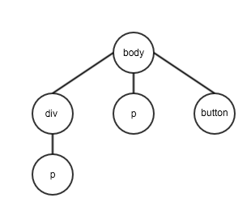

Review
by Sway
Contents
- Web Basic
- HTML
- CSS
- Javascript Introduction
An old question
从你在浏览器里敲入域名，到最后网页呈现到眼前，发生了什么？
按下键盘，呈现到屏幕上为一串字符串
浏览器根据你输入域名，生成 HTTP 请求 (Request)
服务端收到 HTTP 请求，生成一个回应 (Response)
回应是 HTML 字符串
浏览器收到 HTML 字符串，开始解析字符串
HTML 的结构是一棵树(DOM 树)
CSS 解析

DOM 树和 CSS 解析生成的样式表相结合，构成最终的渲染树
当浏览器遇到 script 标签时
- 读入标签里的所有内容
- 除非标签里有 defer 或者 async 属性，否则浏览器会立刻解析并且执行这些 Javacript 命令
- 当有 defer 或者 async 属性时，则会在 HTML 全部解析完毕后再去解析这里的 Javascirpt
HTML
HyperText Markup Language (超文本标记语言)
元素
HTML 是由一系列的元素组成
标签
元素一般由起始标签和结束标签组成，标签中间为元素的内容，可以是文字也可以是子元素，当前某些标签例外，比如 img, input
属性
标签中可以填写元素的属性，例如上述的 style="background-color: green"
特殊的属性
id, class, style
一般来说，id 具有唯一性，在一个 HTML 文档中，不同的元素不能有相同的 id 名，而 class 则是作为类，作用是将类似的元素归纳在一起，在 CSS 中，id 作为选择器的优先级是 class 的 998 倍
CSS
CSS 选择器
- Class selectors
- ID selectors
- Attribute Selectors( Like a[href=xxx] )
- Pseudo-classes selectors ( Like :hover, :active )
CSS 盒模型

CSS 两种重要布局属性
- display
- position
display
- block
- inline
- table
- flex
position
- static
- relative
- absolute
- fixed
CSS 预处理器
用一种编程语言，为 CSS 增加一些编程的特性，并可以用相应的编译器将其转化成 CSS 文件
常见的 CSS 预处理器：SASS, LESS
优点
- Nested (嵌套式，递归式写法）
- 变量
- ...
浏览器兼容性
浏览器内核(浏览器渲染引擎)
- Webkit(主要是 Safari)
- Blink(基于 Webkit2, Chrome 28 版本开始使用，Opera 紧随 Chrome，几个月前微信内置 X5 浏览器也开始基于 Blink)
- Chromium(基于 Webkit, Chrome 28 版本前所使用，Opera 紧随 Chrome)
- Gecko(Mozilla Firefox)
- Trident(IE)
解决兼容性问题
Autoprefixer
Javascript Introduction
- 单线程
- 事件驱动
- 面向对象
- 跨平台
基本语法特性
- 变量类型
- 函数定义
- 作用域
- 基本控制语句
- 原型和原型链
基于浏览器环境下的 Javascript
DOM API
- 查找，生成，删除，修改元素
- 用户行为的事件监听